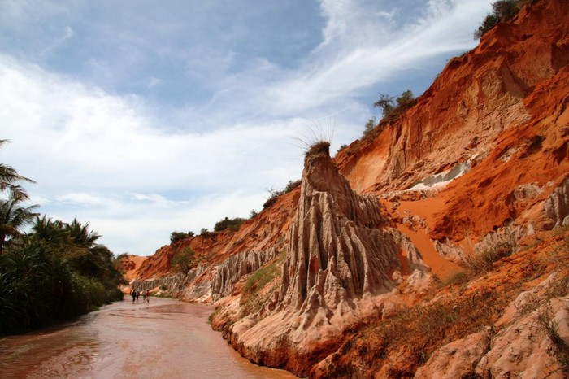

Đc:Phường Hàm Tiến, TP.Phan Thiết, Tỉnh Bình Thuận. Suối Tiên là một khe nước nhỏ ngay cạnh hòn Rơm, khu vực này được du khách đặt cho là chốn "bồng lai tiên cảnh". Trước đây, khe nước nhỏ này còn có tên gọi là Suối Tre. Không giống với bất kỳ dòng suối nào ở nước ta, Suối Tiên nổi bật bởi dòng nước đỏ cam nhuộm màu của cát. Cát bị mưa gió bào mòn nên có nhiều hình thù kỳ lạ, nhiều nhũ cát lô nhô chĩa thẳng lên trời như đỉnh tháp. Vào lúc chiều tối, đứng từ trên cao nhìn xuống, bạn sẽ thấy nơi này giống như một thành quách cổ xưa.
Ngược dòng nước đỏ về tới thượng nguồn suối Tiên, bạn sẽ bắt gặp một con thác nhỏ. Từ đây, bạn có thể quay về bằng đường cũ hoặc tiếp tục khám phá những con đường cát dọc theo triền núi. Những người ưa thám hiểm, leo trèo sẽ có dịp trải nghiệm vượt những khe, hẻm nhỏ hẹp chỉ đủ một bàn chân giữa các đỉnh nhọn. Ở suối Tiên, bạn sẽ được cảm nhận hai thái cực đối lập cùng một lúc: sức nóng của lòng bàn chân nằm dưới cát và sự mát mẻ của đôi chân giữa làn suối mát lạnh. Sau khi tham quan suối, bạn có thể ghé qua trang trại gần đó để cưỡi đà điểu.